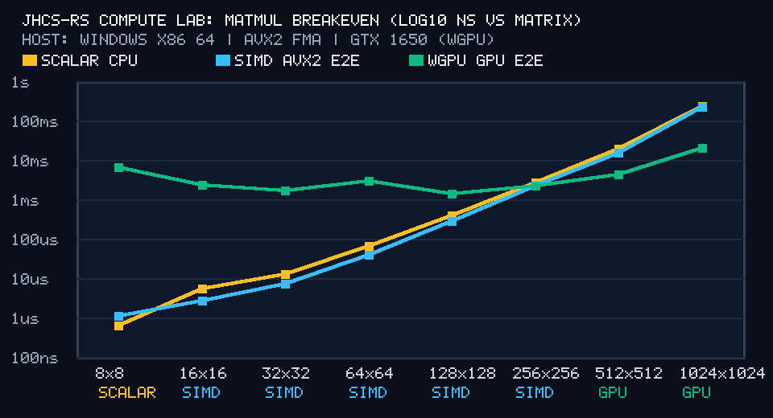

Compute Lab: Ponto de Equilíbrio (Breakeven) Real no jhcs-rs entre CPU Escalar, AVX2/FMA SIMD e GPU wgpu
Enviar tarefas às cegas para uma GPU ou até mesmo invocar um escalonador heterogêneo em micro-lotes frequentemente piora a latência total. Instrumentamos no host Windows (x86_64 AVX2+FMA + NVIDIA GeForce GTX 1650 via wgpu) o binário reproduzível benchmark-breakeven para mapear o custo real de despacho e os cruzamentos exatos de desempenho entre 8x8 e 1024x1024 elementos.
1. O Problema Levantado & Arquitetura do Benchmark
Sistemas heterogêneos costumam sofrer de dois vieses opostos: ou forçam toda computação na CPU escalar desperdiçando unidades vetoriais e shaders GPU, ou terceirizam indiscriminadamente matrizes pequenas para a GPU pagando milissegundos de alocação de staging buffers e cópia PCIe.
Para eliminar suposições, evoluímos jhcs-rs/examples/benchmark-breakeven usando buffers explicitamente alinhados à linha de cache de 64 bytes (#[repr(C, align(64))]) e coletando:
- Overhead do Broker (
T_broker): construção de grafo DAG, ordenação topológica em lotes e seleção determinística de backend (~773–3.550 ns); - Workload A (Memory-Bound,
OP_VECTOR_ADD): soma vetorial64até1.048.576floats (8^2a1024^2); - Workload B (Compute-Bound,
OP_MATMUL): multiplicação densa de matrizes de8x8(1.024 FLOPs) até1024x1024(2,147 GFLOPs) comparando Scalar,AVX2+FMAcom prefetch L1/L2 (_MM_HINT_T0) ewgpuWGSL instrumentado (upload_ns/dispatch_ns/download_ns).
2. Evidência Visual & Resultados Medidos no Host

2.1. Workload B — Dense Matrix Multiply (OP_MATMUL)
| Tamanho | Broker | Scalar (ns) | SIMD E2E (ns) | wgpu Up/Disp/Dl (ns) | wgpu E2E (ns) | GFLOP/s | Vencedor |
|---|---|---|---|---|---|---|---|
8x8 | 914 | 639 | 1.135 | 1.23M / 232k / 4.81M | 6.712.574 | 0.00 / 0.90 | Scalar CPU |
16x16 | 998 | 5.671 | 2.791 | 1.38M / 327k / 225k | 2.371.158 | 2.94 (SIMD) | SIMD AVX2 |
32x32 | 969 | 13.157 | 7.317 | 935k / 200k / 230k | 1.699.049 | 8.96 (SIMD) | SIMD AVX2 |
64x64 | 1.137 | 67.053 | 39.377 | 1.63M / 593k / 245k | 2.982.857 | 13.31 (SIMD) | SIMD AVX2 |
128x128 | 1.250 | 404.995 | 284.220 | 700k / 111k / 385k | 1.437.830 | 14.76 (SIMD) | SIMD AVX2 |
256x256 | 2.383 | 2.717.766 | 2.275.183 | 1.06M / 191k / 720k | 2.286.723 | 14.75 vs 14.67 | SIMD (Limiar) |
512x512 | 3.550 | 19.741.200 | 15.574.050 | 1.06M / 130k / 2.98M | 4.484.550 | 59.86 (GPU) | GPU wgpu |
1024x1024 | 2.850 | 233.903.500 | 232.901.350 | 2.56M / 231k / 16.72M | 20.345.850 | 105.55 (GPU) | GPU wgpu |
2.2. Onde o Backend Escalar Vence (Evidência Contra Offload Cego)
Os dados reais comprovam duas regiões críticas onde CPU Escalar vence sem discussão:
- Micro-matrizes (
8x8MatMul): Execução escalar direta concluiu em639 nscontra1.135 nsE2E no broker SIMD (devido a914 nsde orquestração DAG) e contra6,71 msna GTX 1650 (~10.500xmais lenta que escalar pelo custo de upload/staging/readback). - Streams limitados por banda de memória (
OP_VECTOR_ADD8^2..1024^2): O compilador LLVM em-O3já autovetoriza loops simples de soma sem passar pelo broker; adicionar773–1.495 nsde coordenação torna o caminho escalar direto vencedor até1024^2(1,07 msescalar vs1,54 msSIMD E2E).
3. Pontos de Equilíbrio Identificados & Melhorias Entregues
Breakeven SIMD (16x16 MatMul)
A partir de 16x16 (8.192 FLOPs), o pipeline AVX2+FMA já amortiza os ~1 µs do ComputeBroker e reduz a latência pela metade (2.791 ns vs 5.671 ns), mantendo vantagem consistente até a fronteira 256x256 (~2,27 ms).
Breakeven GPU (256x256 → 512x512)
Em 512x512, a GPU supera CPU SIMD por 3,47x (4,48 ms / 59,86 GFLOP/s). Em 1024x1024, alcança 105,55 GFLOP/s ponta a ponta (20,35 ms incl. 16,73 ms de download vs 232,9 ms na CPU — ganho de 11,4x).
Também exportamos automaticamente docs/benchmarks/jhcs_host_breakeven.md e .json em jhcs-rs e corrigimos o comando CLI de reprodução para cargo run --release -p benchmark-breakeven (além de validar compilação bare-metal #![no_std] das crates centrais em x86_64-unknown-none).
4. Usos Industriais, Domésticos e em Servidores
Industrial & Edge Sem GPU Discreta
Controladores de inspeção visual, filtros Kalman e fusão de sensores em matrizes 16x16..128x128 executam entre 2,8 µs e 284 µs na própria CPU via jhcs-backend-simd (ou escalar para 8x8), dispensando GPU dedicada e respeitando orçamento determinístico em plataformas #![no_std] ou Linux embarcado.
Uso Doméstico & Interfaces Gráficas Responsivas (Aladdin)
A mesma infraestrutura vetorial alimenta box_blur_rgba_simd no compositor Ring 3 Aladdin em PCs modestos sem aceleração Vulkan/OpenGL, entregando efeitos acrílicos sem travar janelas por transferências desnecessárias.
Servidores Híbridos, Inferência & Microserviços Rust
Equipes usando jhcs-rs sob Apache-2.0 podem implementar roteamento dinâmico de lote em servidores Linux/Windows: manter micro-inferências ou pós-processamentos pequenos na CPU (< 256x256) e despachar apenas tensores grandes (>= 512x512) para GPU wgpu, evitando contenção em filas de comando PCIe.
5. Limitações Conhecidas & Próximos Passos
O kernel matmul_f32_simd atual usa esquema não-blocável em cache L3 acima de 512x512 (observado na queda para 9,22 GFLOP/s em 1024x1024), enquanto o backend wgpu aloca buffers por chamada sem pool persistente em VRAM (explicando os 16,7 ms de download/map). Bloqueio por tiling em cache L1/L2 no SIMD e pooling persistente no wgpu são alvos naturais das próximas iterações do Compute Lab.
Jinn Engineering Observatory • Open Collaboration
Applicable Ecosystems & Open Collaboration
Conexões arquiteturais deste estudo com domínios industriais, pesquisa científica e infraestrutura auditável:
Chamada Aberta: Indústria Local, Academia & Setor Público Eticamente Responsável
Convidamos empresas regionais de automação industrial e integradores, universidades e grupos de pesquisa em sistemas operacionais e projetos públicos/governamentais eticamente responsáveis (com transparência e código auditável) a reproduzirem estes experimentos em bancada física, propor workloads comparativos ou avaliar pilotos com o Jinn OS e o JHCS.
![[Valid RSS]](/valid-rss-rogers.png "Validate my RSS feed")